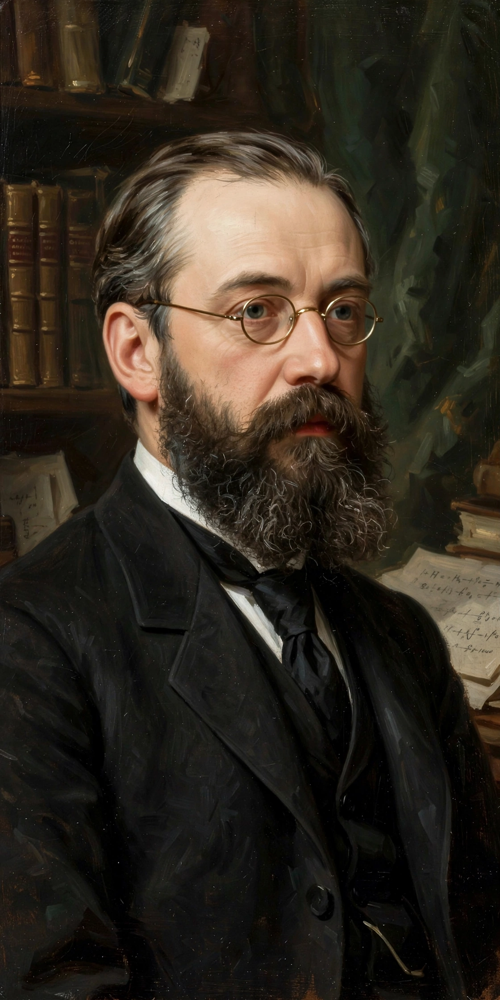

From Wikipedia, the free encyclopedia
| Gösta Mittag-Leffler | |
|---|---|
 | |
| Born | Magnus Gustaf Mittag-Leffler 16 March 1846, Stockholm, Sweden |
| Died | 7 July 1927 (aged 81) Djursholm, Sweden |
| Alma mater | Uppsala University |
| Known for | Mittag-Leffler theorem; Mittag-Leffler function; founding Acta Mathematica |
| Institutions | University of Helsinki; Stockholm University |
Magnus Gustaf (Gösta) Mittag-Leffler (16 March 1846 – 7 July 1927) was a Swedish mathematician. His mathematical contributions are connected chiefly with the theory of functions of a complex variable, particularly the representation of meromorphic functions. He founded the journal Acta Mathematica in 1882 and built his villa at Djursholm into a mathematical institute and library, which after his death became the Institut Mittag-Leffler, today one of the world's leading research institutes in mathematics.
Mittag-Leffler was born in Stockholm, the son of school principal John Olof Leffler; he added his mother's maiden name, Mittag, to his own. He entered Uppsala University in 1865 and completed his doctorate in 1872. After travels to Paris, Göttingen, and Berlin — where he studied under Karl Weierstrass — he became professor of mathematics at the University of Helsinki in 1877. In 1881 he returned to Sweden as the first professor of mathematics at the new Stockholm Högskola (now Stockholm University), where he was instrumental in hiring Sofia Kovalevskaya, the first woman to hold a full professorship in mathematics in Northern Europe.
The Mittag-Leffler theorem (1876) states that a meromorphic function can be constructed with prescribed poles and principal parts, generalizing the partial-fraction decompositions of rational functions to the whole complex plane. The Mittag-Leffler function, a generalization of the exponential function, arises in fractional calculus and the study of anomalous diffusion. His "star" theorem concerns the analytic continuation of power series.
With support from King Oscar II of Sweden, Mittag-Leffler founded Acta Mathematica in 1882; it quickly became one of the discipline's leading journals. A persistent urban legend holds that Alfred Nobel omitted a mathematics prize because of a personal rivalry with Mittag-Leffler (or a supposed affair involving Mittag-Leffler and Nobel's wife or lover). Historians find no evidence for this: Nobel's will focused on fields of practical benefit, and there is little indication the two men were rivals, though Mittag-Leffler did lobby — unsuccessfully — for a mathematics prize to be added.